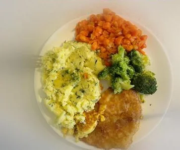
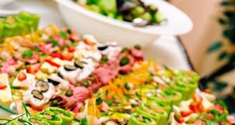

Gotujemy jak w domu — codziennie inne zupy i dania. Aktualne menu dnia znajdziesz każdego ranka na naszym Facebooku.

Zestaw dnia
Na przyjęciaNakładasz ile chcesz — płacisz tylko za wagę talerza.
Zupa + danie główne w stałej, uczciwej cenie.
Ciepły obiad pod Twoje drzwi. Zamów telefonicznie.
Podchodzisz, patrzysz, co dziś pachnie najlepiej, i mówisz, czego ile nałożyć.
Płacisz 4,10 zł za każde 100 g — żadnych sztywnych porcji ani niespodzianek na paragonie.
Jesz na miejscu, bierzesz na wynos albo zamawiasz z dostawą (5 zł, teren Pabianic).